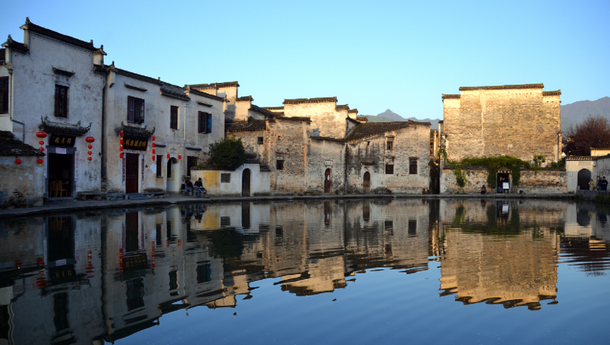

宏村风景区靠什么来吸引游客？
宏村，安徽省黟县宏村镇下辖行政村，中国传统村落，位于黄山西南麓，村域面积19
宏村三面环山，布局基本上保持坐北朝南状，基址处于山水环抱的中央。宏村的古建筑为徽式建筑，粉墙青瓦分列规整，檐角起垫飞翘，整个村落选址、布局和建筑形态，强调天人合一、尊重自然、利用自然的理想境界，使宏村村落的整体轮廓与地形、地貌、山水等自然风光和谐统一。

国务院批准宏村古建筑群为第五批全国重点文物保护单位。
宏村，安徽省黟县宏村镇下辖行政村，中国传统村落，位于黄山西南麓，村域面积19
宏村古建筑群位于安徽省黟县城东北11公里处，为明、清、民国时期徽州民居建筑群。保护面积28万平方米，明清建筑有103幢，民国时期建筑有34幢。宏村三面环山，坐北朝南，宏村的徽派建筑具有深厚的人文内涵，代表建筑有南湖书院、乐叙堂、承志堂等及百余幢明清时期民居。
宏村：徽州建筑文化的杰出代表。
宏村民居建筑群保存基本完好，有书院建筑、祠堂建筑和众多的住宅建筑及其么家园林，是徽州建筑文化的杰出代表。
宏村平面采用“牛”形布局，雷岗山是“牛头”，村口的古树是“牛角”，村中由东而西井然有序、鳞次栉比的明清古建筑是“牛身”，村西溪水上四座桥是“牛腿”，月沼是“牛胃”，南湖是“牛肚”，水圳引西溪河入水口，经九曲十八弯（即“牛肠”）流经全村，最后注入南湖。